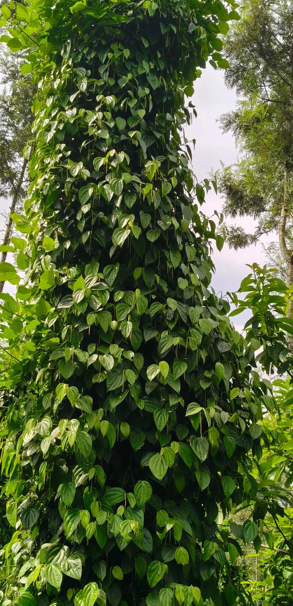
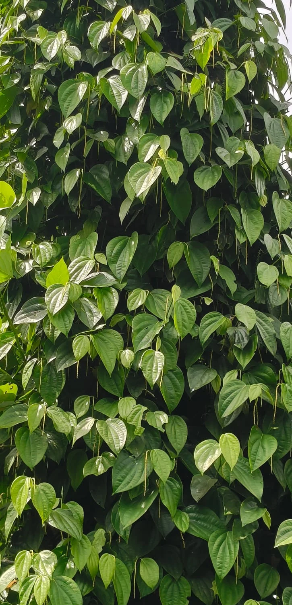

Estate-Grown Pepper in Mullur, Karnataka
Black pepper is an important intercrop at SAARTHA ESTATE. Our pepper vines are being established among the coffee and other crops, with field attention to support trees, vine training, soil conditions, rainfall and plant health.
The estate is located in Mullur, near Sanivarsanthe, Somwarpet Taluk, Karnataka. This page documents the actual pepper-growing journey and will be updated as the vines develop and the harvest becomes available.
Pepper Vines: Real Field Photographs


Our Pepper Product — Planned Introduction
We are working towards introducing SAARTHA ESTATE black pepper as part of our farm-product collection. The expected availability is from February 2027, subject to harvest, processing and final product preparation. Pack sizes and prices will be announced closer to launch.
Availability: The pepper product is not yet open for sale. You are welcome to contact us for updates on the planned launch.
Enquire about the Pepper Launch on WhatsAppExplore Our Estate Coffee
SAARTHA ESTATE also offers a collection of four coffee blends, including 100% Arabica, an Arabica–Robusta blend and two South Indian filter coffee blends.
Explore the Coffee Collection